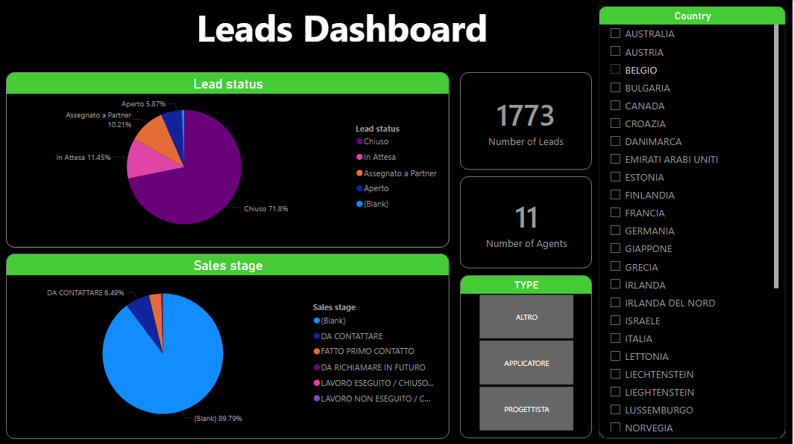
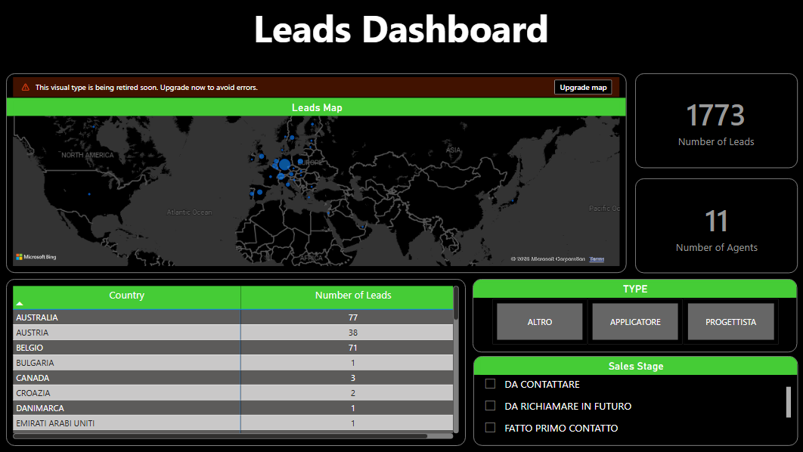

Project Overview
This project provides a comprehensive Power BI dashboard showing leads metrics across state, regions, products, and time periods. It enables management to track KPIs, monitor trends, and make data-driven decisions efficiently.
Leads Summary Report
This page provides summary of important KPIs over leads generation numbers, their origin, application type, status and sales stage.
Leads Origin
This page focuses on leads generation origin, which helps to develop area specific strategy for sales.
Key Insights
The dashboard highlights leads coming from diffrent countries, their current status and sales stage. By integrating leads, sales, agent, and cpuntry maps data, it helps teams quickly identify opportunities and areas requiring intervention.
Conclusion
This Power BI dashboard streamlines the analysis of leads data and provides actionable insights for strategic decisions. It replaces manual reporting and empowers stakeholders with real-time, interactive visualizations.